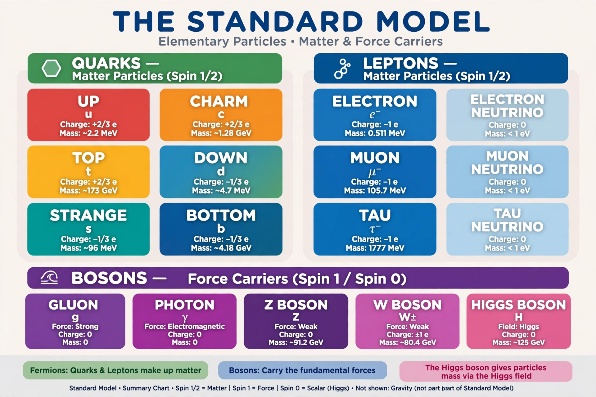

Standard Model
| Interactions | Electromagnetic, weak, strong |
|---|---|
| Particles | 6 quarks, 6 leptons, gauge bosons, Higgs boson |
| Gauge group | SU(3) × SU(2) × U(1) |
| Confirmed | Higgs boson discovered 2012 at the LHC |

[Image: Table of the elementary particles of the Standard Model: quarks, leptons, gauge bosons and the Higgs boson]The Standard Model of particle physics is the theory describing three of the four known fundamental forces in the universe (the electromagnetic, weak and strong interactions — excluding gravity) and classifying all known elementary particles. It is a Quantum field theory based on the gauge symmetry group SU(3) × SU(2) × U(1).
Developed in stages through the mid-twentieth century and completed in essentially its modern form in the 1970s, the Standard Model has been confirmed by an enormous range of experiments, culminating in the 2012 discovery of the Higgs boson at CERN's Large Hadron Collider. It is nonetheless known to be incomplete: it does not explain gravity, Dark matter, Dark energy, the matter–antimatter asymmetry, or (in its original form) neutrino masses.
Particle content
Matter consists of fermions in three generations. Each generation contains two quarks (up/down, charm/strange, top/bottom) and two leptons (a charged lepton — electron, muon, tau — and its neutrino). The first generation alone makes up all ordinary matter. Forces are mediated by spin-1 gauge bosons: the Photon (electromagnetism), the W and Z bosons (weak interaction) and eight gluons (strong interaction).
The scalar Higgs boson, the quantum of the Higgs field, gives elementary particles their masses through the Higgs mechanism while preserving the gauge symmetries of the theory — masses arise from interaction with the field rather than being inserted by hand.
Construction and tests
The electroweak part of the model unifies quantum electrodynamics with the weak interaction (Electroweak interaction), developed by Sheldon Glashow, Abdus Salam and Steven Weinberg; the strong interaction is described by Quantum chromodynamics (QCD). Experimental landmarks include the discovery of the charm quark and the tau (1970s), the W and Z bosons at CERN (1983), the top quark at Fermilab (1995) and the Higgs boson (2012).
Precision measurements at LEP, the Tevatron and the LHC have tested the model to parts per thousand; the anomalous magnetic moment of the muon and the masses of the W boson remain active areas of scrutiny for possible deviations.
Limitations and beyond
Neutrino oscillations, established from 1998, prove that neutrinos have mass — accommodated by extending the model but not predicted by its minimal form. The Standard Model also offers no candidate for dark matter, no mechanism for the observed baryon asymmetry, and no account of cosmic inflation or dark energy, and it cannot be consistently merged with General relativity. Proposed extensions include Supersymmetry, grand unified theories and String theory, none yet experimentally confirmed.